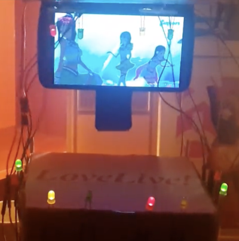
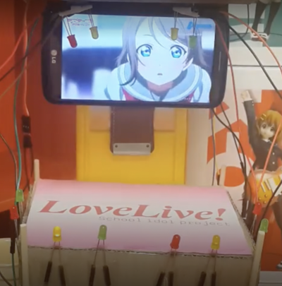
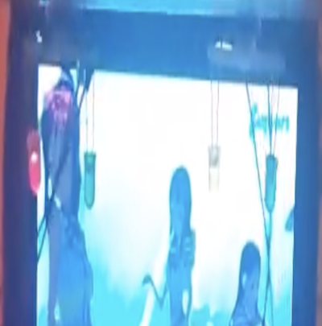

|  |
A function to Turn On Light on LED The LEDs near the stage and the LEDs hanging above it twinkle. |
|  |
A function to Detect Brightness Light or dark determines how the LED flashes. When it's dark, the LED flashes a lot. |
|  |
A function to Run Motors When it is dark, the LED will flash and the motor will run, making it a moving LED. |